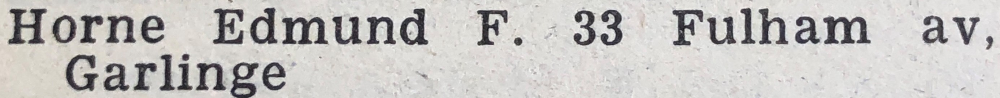

Edward John Horne 1909 - c1993
[ Home ] | [ Calendar ] | [ Surnames Index ] | [ Errors ] | [ Family History ]A gardener heavy and the older of 2 children of Isaac Horne (a gardener domestic servant) and Lucy Stockbridge (a dressmaker), Edward Horne, the first cousin twice-removed on the father's side of Nigel Horne, was born in Broadstairs, Kent, England on 12 Jun 19091,2,3,4,5 and married Hilda Dale (with whom he had 3 children: Anthony J, Martin Stuart and Gillian T, along with 1 surviving child) at Wesleyan Church in Broadstairs on 2 Jun 19326.
During his life, he was living at 23 Victoria Avenue, Northdown, Margate, Kent, England on 2 Apr 191114; at Rose Cottage, Fairfield, Thanet, Kent on 19 Jun 19212; in St Peters, Thanet, Kent in 1932; at 3 Blagdon Cottages, Tippledore Lane, St Peters, Thanet, Kent in 193613; at 29 Walmsley Road in Broadstairs on 29 Sept 19393; and at 4 Northdown Road, St Peters, Thanet, Kent in 19537, in 19598, in 19639, in 196710, in 197111 and in 197412.
He died c. Feb 1993 in Thanet, Kent, England4.
Parents
- Isaac was born on 18 Jun 1867
- Lucy was born on 11 Apr 1875
Children
- Anthony J was born c. May 1937
- Martin Stuart was born on 20 Mar 1940
Citations
- 1911 England Census Online publication - Provo, UT, USA: Ancestry.com Operations, Inc., 2011.Original data - Census Returns of England and Wales, 1911. Kew, Surrey, England: The National Archives of the UK (TNA), 1911. Data imaged from the National Archives, London, England.
- 1921 Census Of England & Wales - Findmypast (was age 12 and the son of the head of the household)
- 1939 Register - Findmypast (was recorded at this address)
- England & Wales deaths 1837-2007 - Findmypast
- England & Wales, FreeBMD Birth Index, 1837-1915 Online publication - Provo, UT, USA: The Generations Network, Inc., 2006.Original data - General Register Office. England and Wales Civil Registration Indexes. London, England: General Register Office. © Crown copyright. Published by permission of the Cont
- England & Wales marriages 1837-2008 - Findmypast
- 1953 Kelly's Thanet Directory
- 1959 Kelly's Thanet Directory
- 1963 Kelly's Thanet Directory
- 1967 Kelly's Thanet Directory
- 1971 Kelly's Thanet Directory
- 1974 Kelly's Thanet Directory
- 1936 Kelly's Thanet Directory
- 1911 Census for England & Wales - Findmypast (was age 1 and the son of the head of the household)
Media
Thanet Advertiser June 10, 1932

1953 Kelly's Thanet Directory

IMG_6820
1963 Kelly's Thanet Directory

1967 Kelly's Thanet Directory
1936 Kelly's Thanet Directory

1974 Kelly's Thanet Directory

1936 Kelly's Thanet Directory
England & Wales deaths 1837-2007 - BMD/D/1993/2/79635340
England & Wales births 1837-2006 Transcription - BMD-B-1909-2-AZ-000298-189
1939 Register Transcription - TNA-R39-1686-1686A-002-40
England & Wales marriages 1837-2008 - BMD/M/1932/2/AZ/000498/080
1921 Census of England & Wales - GBC/1921/RG15/04458/0261/03
Family Tree

Map
Generated by ged2site. Last updated on Jul 3, 2024
Known Issues
Residence record for 1932 contains no citation
Listed in the residence for 1936, but spouse Hilda Dale is not
Listed in the residence for 29 Sep 1939, but spouse Hilda Dale is not
Listed in the residence for 1953, but spouse Hilda Dale is not
Listed in the residence for 1959, but spouse Hilda Dale is not
Listed in the residence for 1963, but spouse Hilda Dale is not
Listed in the residence for 1967, but spouse Hilda Dale is not
Listed in the residence for 1971, but spouse Hilda Dale is not
Listed in the residence for 1974, but spouse Hilda Dale is not